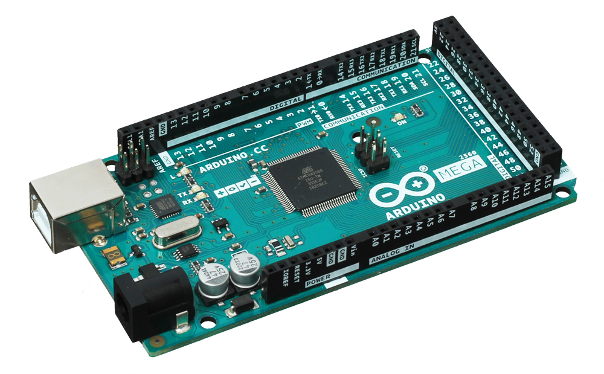
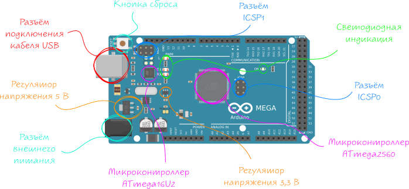
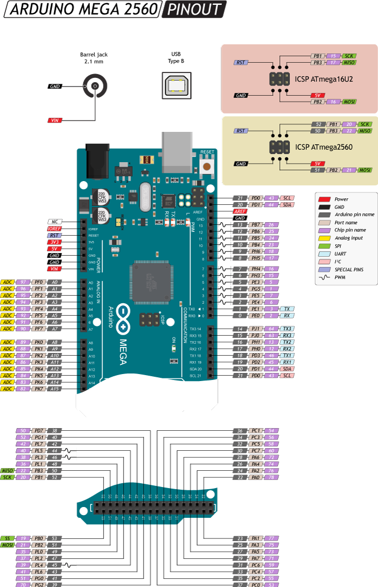
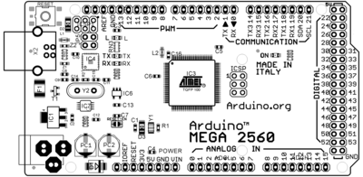

Arduino Mega 2560: распиновка, схема подключения и программирование
Arduino Mega 2560 — флагманская платформа для разработки на базе микроконтроллера ATmega2560.
На плате предусмотрено всё необходимое для удобной работы с микроконтроллером: 54 цифровых входа/выхода, 16 аналоговых входов, разъём для программирования USB, внешний разъём питания и кнопка сброса.

Подключение и настройка
Для запуска платформы скачайте и установите на компьютер интегрированную среду разработки Arduino IDE.
При выборе платформы выбирайте Arduino Mega 2560.
У меня не появляется новых устройств при подключении Arduino Mega 2560
У меня «Неизвестное устройство» вместо «Arduino Mega 2560»
У меня появилось устройство «ATmega16U2» вместо «Arduino Mega 2560»
Если всё получилось — можете смело переходить к экспериментам.

Сердцем платформы Arduino Mega является 8-битный микроконтроллер семейства AVR — ATmega2560 с тактовой частотой 16 МГц. Контроллер предоставляет 256 КБ Flash-памяти для хранения прошивки, 8 КБ оперативной памяти SRAM и 4 КБ энергонезависимой памяти EEPROM для хранения данных.
Микроконтроллер ATmega16U2 обеспечивает связь микроконтроллера ATmega2560 с USB-портом компьютера. При подключении к ПК Arduino Mega 2560 определяется как виртуальный COM-порт.
|
Имя светодиода |
Назначение |
|
RX и TX |
Мигают при обмене данными между Arduino Mega 2560 и ПК. |
|
L |
Пользовательский светодиод подключённый к 13 пину микроконтроллера. При высоком уровне светодиод включается, при низком – выключается. |
|
ON |
Наличие питания на Arduino Mega. |
Разъём USB Type-B для питания и прошивки платформы Arduino Mega 2560 с помощью компьютера.
Разъём для подключения внешнего питания от 7 В до 12 В.
Аналог кнопки RESET обычного компьютера. Служит для сброса микроконтроллера.
Линейный понижающий регулятор напряжения LD1117S50CTR с выходом 5 вольт обеспечивает питание микроконтроллеров ATmega2560, ATmega16U2 и другой логики платформы. Максимальный выходной ток составляет 800 мА.
Линейный понижающий регулятор напряжения LP2985-33DBVR с выходом 3,3 вольта. Линия выведена только на пин 3V3. Максимальный выходной ток составляет 150 мА.
ICSP-разъём предназначен для внутрисхемного программирования микроконтроллера ATmega2560. Также с применением библиотеки SPI данные выводы могут осуществлять связь с платами расширения по интерфейсу SPI. Линии SPI выведены на 6-контактный разъём, а также продублированы на цифровых пинах 50(MISO), 51(MOSI), 52(SCK) и 53(SS).
ICSP-разъём для внутрисхемного программирования микроконтроллера ATmega16U2.

TWI/I²C: пины 20(SDA) и 21(SCL)
Для общения с периферией по интерфейсу I²C. Для работы используйте библиотеку Wire.
SPI: пины 50(MISO), 51(MOSI), 52(SCK) и 53(SS)
Для общения с периферией по интерфейсу SPI. Для работы — используйте библиотеку SPI.
UART: пины 0(RX) и 1(TX), 19(RX1) и 18(TX1), 17(RX2) и 16(TX2), 15(RX3) и 14(TX3)
Используется для коммуникации платы Arduino с компьютером или другими устройствами по последовательному интерфейсу. Выводы 0(RX) и 1(TX) соединены с соответствующими выводами микроконтроллера ATmega16U2, выполняющего роль USB-UART преобразователя. Для работы с последовательным интерфейсом — используйте методы библиотеки Serial.
Принципиальная и монтажная схемы

{kind=link}